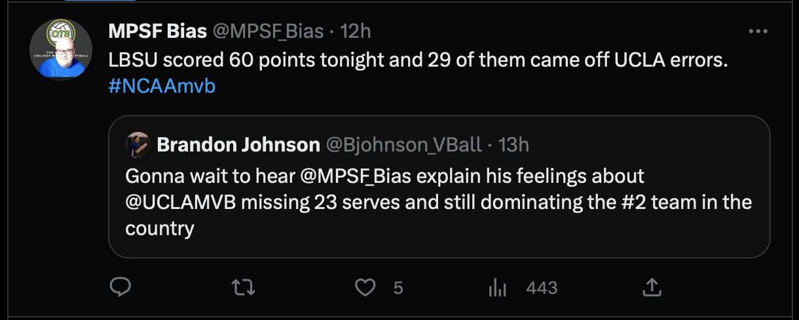

Oh hello! I had a spark of motivation to dust off this blog and refresh my memory on how to put a post together here. The cause of this spark? Last night, I was at the UCLA vs. Long Beach match in which UCLA handed Long beach their first loss of the season in convincing fashion, winning 25-19, 25-21, 25-20. While that result in itself may not be all that surprising depending who you ask (see: https://vbelo.substack.com/p/vbelo-scouting-report-february-09), one particular metric stood out in the match which was UCLA committing 23 service errors to Long Beach’s 9.

So, let’s talk about service errors! More specifically, I’d like to attempt to provide some context to service errors with some data.
Taking a sample of 257 international men’s matches since 2021 (962 sets played), I parsed the data to get serve error percentage (sepct), ace percentage (acepct), and overall point scoring percentage (pspct) for each team in each set and paired that with the score margin (score_margin).
# parse data into the metrics we want, including some identifiers for each row of data
se_data <- international_data %>%
filter(sk == 1) %>%
group_by(date,match_id,team_id,opp_team_id,team_id_wonlost_set,set_number,wonlost_set,set_margin) %>%
summarise(sepct = mean(sk.grd == 1),
acepct = mean(sk.grd == 6),
pspct = mean(wonlost == 1),
.groups = "drop")Always a good idea to see what the data looks like visually, so first I paired serve error percentage with set margin
ggplot(se_data,
aes(x = sepct,
y = set_margin)) +
geom_point() +
geom_smooth(method = "lm",
formula = "y ~ x") +
labs(title = "Serve Error Percentage x Set Margin",
subtitle = "International Men (2021-2022)",
x = "Serve Error Percentage",
y = "Set Margin")